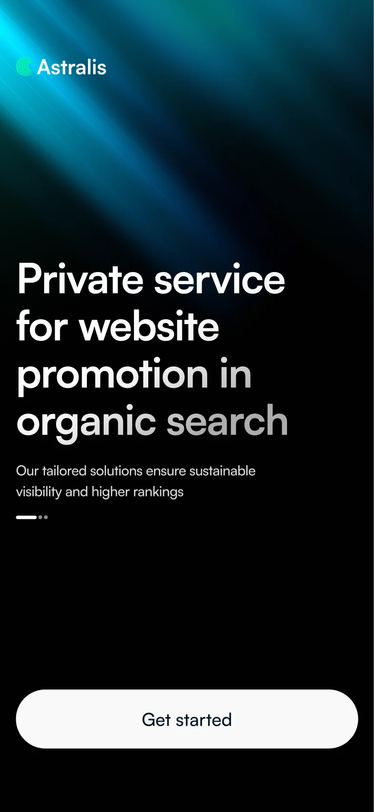
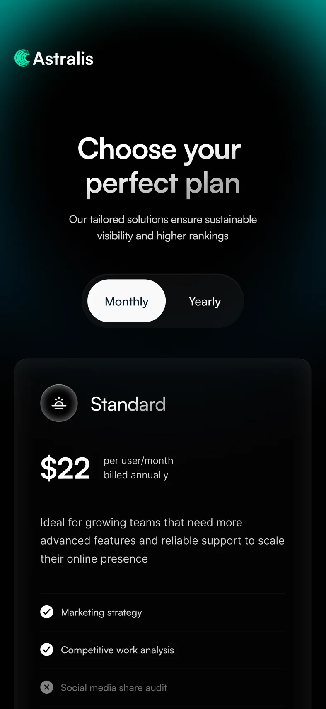
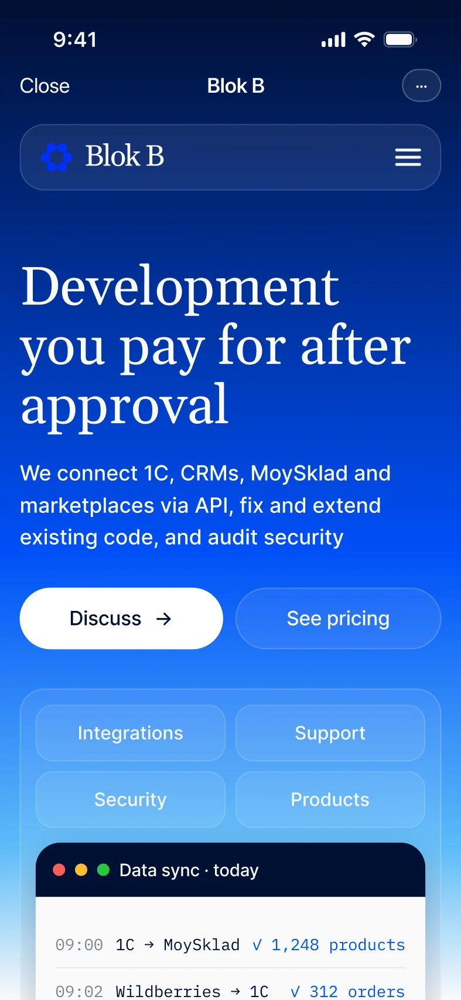
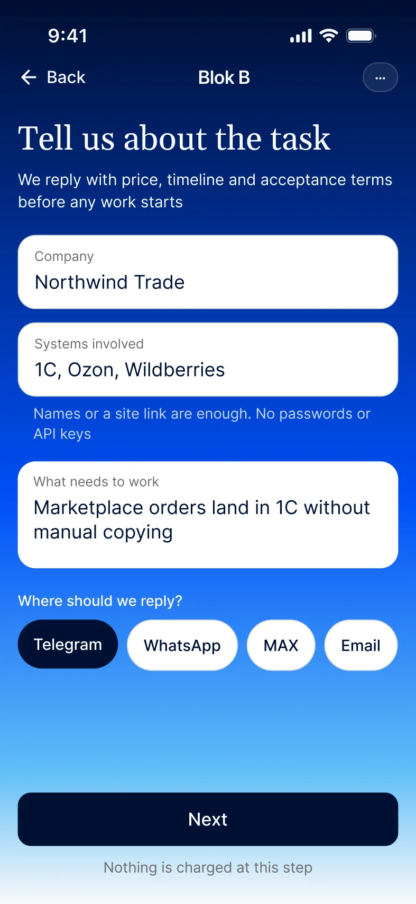

UI/UX
Interfaces built as design systems in Figma: consistent, scalable and handed off dev-ready
I’m Diana, a UI/UX designer with 5+ years of designing digital products. Available for projects
Interfaces built as design systems in Figma: consistent, scalable and handed off dev-ready
A graphic design background turned into type, color and components that feel deliberate
Research, user interviews and hypotheses first, then design for the metric that matters
From mockup to live site: hand-coded, responsive and hosted on its own domain. This site included
North Star
Interactive learning platform for a paid web animation course, with video breakdowns, live demos and hands-on tasks

Astralis
Landing page and a Mini App dashboard for an invite-only SEO service, from brand to hand-off




Blok B
B2B landing for an integrations and security studio


Five years of product design in EdTech and E-commerce, a graphic design background and a habit of taking work all the way to launch
I came to product design from graphic design, so the visuals are never an afterthought. Every flow starts with research and user needs, and every screen is crafted down to the type, color and spacing. The result is a product that works well, looks considered and stays consistent as it grows
AI is built into my process: it speeds up research, structure, copy drafts and code, while every design decision stays mine. That frees time for what AI can’t do: understanding users, finding the real problem and polishing the details. Careful craft at startup speed, without cutting corners
One-page sites that explain the product fast and lead to a single clear action
Company and portfolio sites with a clear structure and easy navigation
Dense data turned into screens you can read at a glance and act on
Product interfaces with real flows: sign-up, settings, forms, empty and error states
iOS and Android screens built around one-handed use and short sessions
Component libraries and tokens that keep a product consistent as it grows
Still curious about something? Drop me a line, the contact is at the bottom of the page
Pretty much anything in product design: interfaces, web apps, redesigns, MVPs and landing pages. The one thing I care about is that the product is genuinely useful to the people using it. I’m happiest with startups building an interesting SaaS product, especially small, tight-knit teams
Yes. Beyond design, I code and deploy live sites myself, from a one-pager to a full multi-page site on its own domain (this portfolio included). For heavier builds I hand developers clean, spec-ready files
Close and transparent. We sync on a short daily call over Google Meet so nothing drifts, and everything else runs async in Telegram, Slack or straight inside Figma, where comments and files stay in one place. You always know where the project stands
Happily. I prefer working inside a team, plugging in with developers, designers and marketers, though I’m just as fine running things solo. I pick up your context and processes quickly and fit into how you already work
It depends on the scope, so I estimate each project up front and set clear milestones before we start. A simple landing page can be ready in a day. For anything larger, you’ll have a realistic timeline before any work begins
Openly and with care. I use it to explore more options early and to turn approved designs into working code faster. Everything it produces goes through my review, and nothing reaches you that I haven’t checked myself